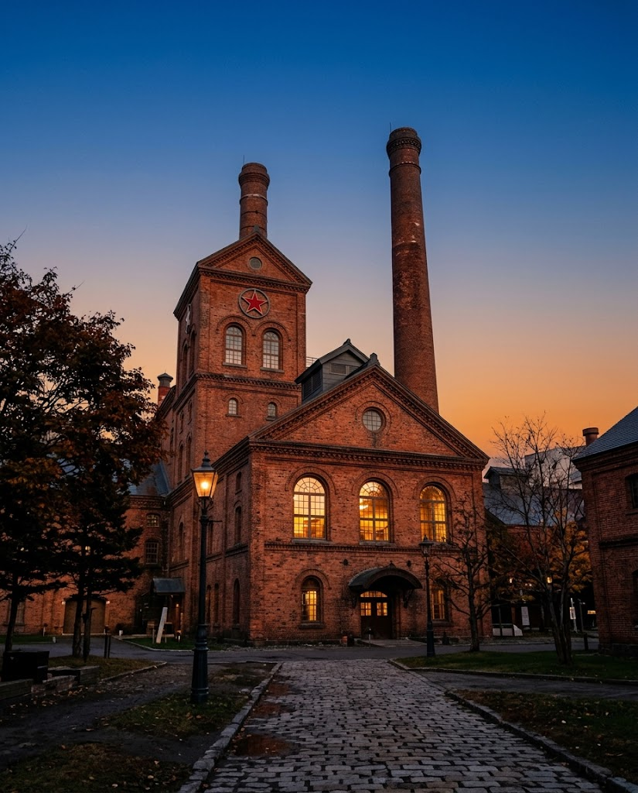
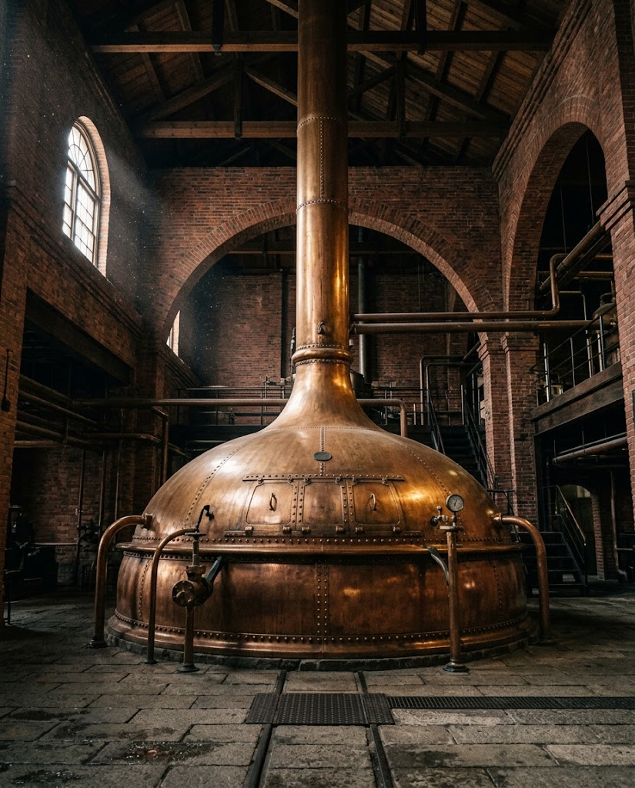

札幌市東区｜日本初のビール専門博物館
開拓使麦酒醸造所から続くビールの歴史を、1890年建設の赤レンガ建築で辿る。
サッポロビール博物館は、日本で最も古いビールブランドのひとつ、サッポロビールの歴史とビール文化を広く伝えるために生まれた博物館です。
開拓使麦酒醸造所に始まる歩みを中心に、明治時代以降のビール醸造技術や、その背景にあった社会の動きまでを体系的に学べます。日本初のビール専門博物館として、高い評価を受けています。
開拓使麦酒醸造所から現在まで。醸造技術と社会的背景をあわせて知ることができます。
赤レンガ造りの歴史的建築は文化財としての価値を持ち、製麦所時代の製造設備や蒸留機器も見どころです。
わかりやすい解説と体験型展示を強化し、はじめての方にも楽しめる内容になりました。

館が建つのは、1890年に建てられた旧札幌製糖会社の赤レンガ工場。時代ごとに役割を変えながら、いまもこの場所に残っています。
赤レンガの工場が建設される。当時は製糖工場として使われた。
札幌麦酒が買収。製麦所として改修される。
製麦所としての役目を終える。
サッポロビール博物館として開館。
リニューアル。解説と体験型展示がさらに充実。
明治期の面影を残すレンガ建築、シンボルの赤い星、そして巨大な煮沸釜。写真に残したくなる場所が、館内外にそろっています。
赤レンガの外観と、シンボルの赤い星。歩くたびに表情が変わります。
国立科学博物館の未来技術遺産に認定された、迫力ある展示です。
ビールの試飲に加え、北海道グルメも楽しめます。見学のあとの一杯まで、ゆったりお過ごしください。
★★★★★
月曜のためツアーが実施されていなかったため自由見学。1階のホールで特別なビールが飲める。自分は赤星のピルスナーを試飲。注ぎ方にも拘りがあり美味しかった。
来館者のクチコミ
★★★★★
札幌ビールの聖地。ゴールデンカムイで知ったため、一度はいってみたいと思っていた。劇中でみた通りの建築物が多くあって嬉しい。中にはビール博物館やジンギスカンが食べられる、ビアホール、ギフトショップと半日以上はいられるボリュームとなっている。ビアホールのビールは格別に美味く、ジンギスカンも臭さがなく食べられる。博物館の展示も素人でもわかりやすい内容となっているので、一見さん向けの施設。ここでしか買えない瓶ビールがギフトショップに売っているので、来た際には忘れずにチェックもしたい。札幌を訪れた際には立ち寄ることを強くお勧めする。
来館者のクチコミ